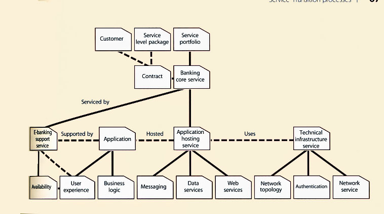

Semana 11: Diseño del servicio y Transición del servicio
En esta semana profundizamos en Diseño del Servicio (cómo diseñar servicios robustos, seguros y escalables) y en Transición del Servicio (planificar y ejecutar despliegues controlados que minimicen el riesgo y garanticen aceptación). Contenido ampliado con plantillas, checklists y un laboratorio práctico.

Figura: Desde el Service Design Package hasta el plan de transición y aceptación.
Objetivos de aprendizaje
Comprender el ciclo completo de Service Design: requisitos, arquitectura, SLP/SLAs, seguridad, capacidad y continuidad.
Conocer la estructura del Service Design Package (SDP) y cómo documentar requisitos de aceptación.
Aprender prácticas de Service Transition: planificación de releases, gestión de cambios, pruebas y CAB.
Diseñar planes de despliegue (blue/green, canary, rolling) con rollback y validación post-deploy.
Preparar artefactos reutilizables: checklist de release, plan de pruebas, runbook y artículos de conocimiento.
Contenido (ampliado)
1. Principios de Service Design
El diseño de servicios debe garantizar que la entrega soporta los requisitos del negocio en calidad, coste, seguridad y continuidad.
Centricidad en el usuario: experiencia, niveles de servicio y accesibilidad.
Diseño por capacidad: estimaciones de carga, escalabilidad y pruebas de stress.
Seguridad y cumplimiento: controles desde el diseño (security-by-design, privacy-by-design).
Operabilidad: observabilidad, telemetría y runbooks incorporados desde el diseño.
Reutilización y modularidad: componentes, APIs y contratos claros.
2. Service Design Package (SDP) — contenido y plantilla
El SDP es el paquete central que recoge todo lo necesario para construir, probar, desplegar y operar un servicio.
Secciones recomendadas del SDP
Resumen ejecutivo y proposición de valor.
Alcance del servicio y requisitos funcionales/no funcionales (SLA, seguridad, rendimiento).
Arquitectura lógica y física (diagramas), dependencias y CMDB references.
Modelos de entrega (on-prem / cloud / híbrido) y requisitos de capacidad.
Requisitos de continuidad, backup y DR.
Matriz RACI: roles para diseño, pruebas, despliegue y operación.
Plan de transición (high-level) y criterios de aceptación (exit criteria).
Plan de pruebas (unit, integración, performance, seguridad) y artefactos de validación.
Runbooks, playbooks y procedimientos operativos.
Tip: mantén el SDP versionado junto al código (repo) y vinculado al pipeline CI/CD.
3. Diseño técnico: arquitectura, configuración y dependencias
Profundiza en elementos técnicos que deben quedar definidos en el diseño.
Topologías de despliegue: microservicios, monolitos modulados, BFF, edge caches.
Red y seguridad: segmentación, WAF, network policies, TLS y gestión de secretos.
Almacenamiento y consistencia: tipos de almacenamiento, RTO/RPO, políticas de backup.
Observabilidad: métricas, logs y traces requeridos para SLOs y alertas.
Configuración como código: IaC (Terraform), config maps, y gestión de secretos (Vault).
4. Planificación de la transición: modelos y artefactos
La transición reduce riesgo: planifica, prueba, valida y formaliza la aceptación antes de operar en producción.
Plan de transición completo: actividades, dependencias, ventanas, rollback y recursos.
Release Management: tipos de release (major, minor, emergency) y criterios de aprobación.
Change Advisory Board (CAB): roles, flujos y excepciones para cambios urgentes.
Documentos clave: plan de despliegue, plan de vuelta atrás, checklist de pre/post-deploy.
Pruebas de aceptación: UAT, SAST/DAST, performance y pruebas de resiliencia.
5. Modelos de despliegue y estrategias de mitigación de riesgo
Seleccionar una estrategia de despliegue adecuada reduce impacto y facilita rollback.
Blue/Green: entornos paralelos y conmutación controlada.
Canary: desplegar a un subconjunto y medir antes de ampliar.
Rolling: actualizaciones por lotes sin downtime completo.
Feature flags: habilitar/deshabilitar funcionalidades sin desplegar código.
Immutable infra: reemplazo de instancias en lugar de cambios in-place.
6. Gestión del cambio, CAB y automatización
El cambio controlado combina gobierno con velocidad: automatiza donde sea posible y mantén gobernanza ligera para cambios ágiles.
Tipos de cambio y criterios para bypass de CAB (emergencias, hotfix con post-facto review).
Integración del pipeline CI/CD con solicitudes de cambio (change requests) y approvals automáticos.
Auditoría y trazabilidad: cada despliegue debe poder asociarse a un CR, commit y artefacto build.
Métricas de cambio: lead time for changes, change failure rate, mean time to restore.
7. Pruebas, validación y aceptación operacional
Definir criterios claros de aceptación evita “deploys a ciegas”.
Plan de pruebas con cobertura: unit, integración, contract tests, E2E, performance y seguridad.
Pruebas de resiliencia: chaos engineering básico, pruebas de failover y degradación.
Criterios de aceptación operativa: métricas mínimas (latencia, error rate, throughput) y checks automatizados.
Checklist de Go/No-Go para despliegues en ventanas críticas.
8. Entrega de operaciones: runbooks, knowledge base y soporte
La documentación operativa hace la diferencia entre recuperaciones rápidas o largas.
Runbooks con pasos claros para incidentes comunes y remediaciones automatizadas.
Artículos de conocimiento (KCS): plantillas y ejemplos para el service desk.
Capacitación y handover: sesiones, vídeos, y pruebas de conocimiento al personal de operación.
Integración CMDB/Service Catalog para actualizar estados y dependencias tras la transición.
9. KPIs y métricas para diseño y transición
Métricas recomendadas para evaluar la calidad del diseño y la eficacia de la transición.
Antes / diseño: % requisitos no-funcionales cubiertos, cobertura de pruebas en SDP.
Despliegues: despliegues por semana, % despliegues exitosos, tasa de rollback.
Cambios: lead time for changes, change failure rate, tiempo de aprobación CAB.
Operación: MTTR, % SLA cumplidos post-deploy, incidentes por despliegue.
10. Herramientas y pipelines recomendados
Herramientas que facilitan el diseño reproducible y la transición automatizada.
Gestión de cambios & ITSM: ServiceNow, Jira Service Management (integración de CRs).
Feature flags: LaunchDarkly, Unleash.
11. Checklists y plantillas rápidas (útiles para el laboratorio)
Incluye fragmentos que puedes copiar/pegar al crear artefactos.
Checklist pre-despliegue (resumen)
SDP aprobado y versionado en repo.
Backups y snapshot listos para rollback.
Pruebas automáticas pasan en pipeline (unit, integration, smoke).
CAB / approvals asignados y CR cerrado para la ventana.
Runbook y contactos en caso de incidentes listos.
Plantilla mínima de Plan de Transición
Título:
Alcance:
Ventana de despliegue:
Equipo y contactos:
Pasos pre-despliegue:
Pasos de despliegue:
Validaciones post-despliegue:
Rollback (pasos):
Criterios de aceptación:
Lecciones aprendidas:
12. Roadmap práctico (resumen ampliado)
Diseño detallado (3–6 semanas): SDP, arquitectura, acuerdos de seguridad y runbooks.
Construcción y pruebas (4–8 semanas): pipelines, pruebas automatizadas, pruebas de performance y seguridad.
Transición piloto (4–6 semanas): despliegue canary o en entorno controlado, validar SLOs y aceptación.
Despliegue general y estabilización (2–4 semanas): roll-out por dominios y operación asistida.
Post-transition (continuo): revisión de lecciones aprendidas y mejoras en el SDP y runbooks.
En la Semana 11 profundizamos en Service Design (garantizar requisitos no funcionales, seguridad, operabilidad) y en Service Transition (planificación, pruebas, CAB, despliegues seguros y aceptación). El material incluye plantillas prácticas (SDP, plan de transición, runbooks) y un laboratorio para aplicar el flujo completo a un servicio real.
¿Quieres que genere ahora los artefactos del laboratorio (SDP en .docx, pipeline CI/CD en YAML, plantilla de plan de transición en .docx/.xlsx y runbook en .md) y te los entregue empaquetados para descargar? Dime cuáles formatos prefieres y los creo inmediatamente.